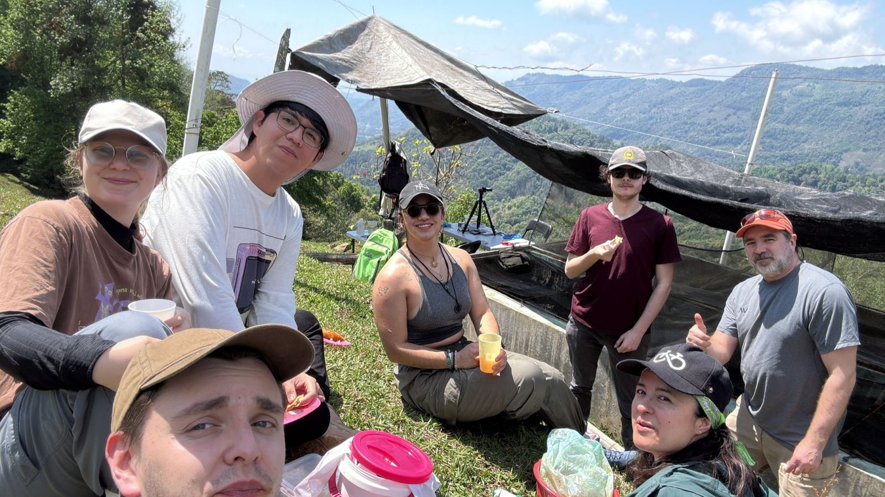
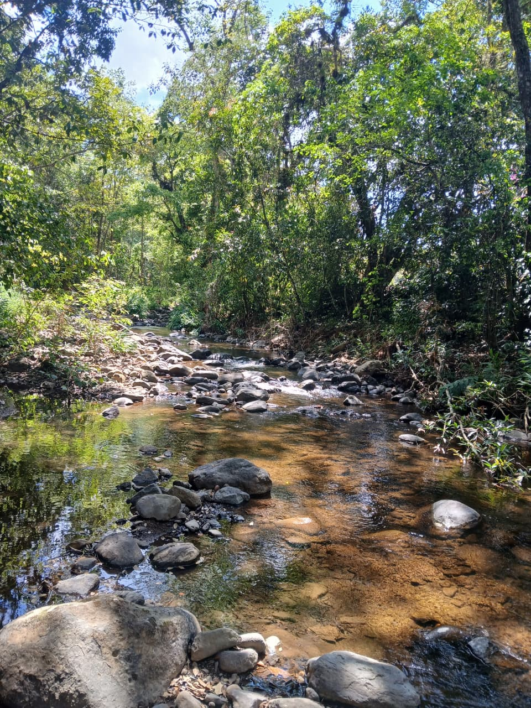
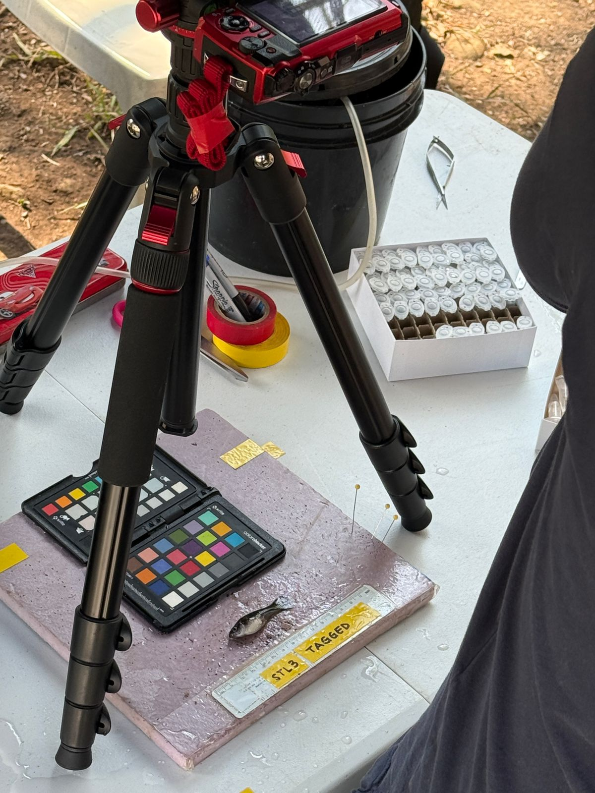

CICHAZ — Invited by University of Padova, Italy
Estancia de investigación en CICHAZ
Marzo 2026 — Abril 2026 · Hidalgo, CDMX
Resumen
Invitado por el Prof. Gil Rosenthal (University of Padova) a colaborar en un proyecto de investigación internacional junto a investigadores italianos y canadienses. Contribuí tanto a la infraestructura como a la visión por computadora del proyecto: resolví problemas críticos de conectividad y construí pipelines de rastreo 3D.
Logros clave
- Construí una red secundaria con una Raspberry Pi conectada al módem existente, lo que resolvió por completo los problemas crónicos de conectividad en CICHAZ y permitió operar la investigación de forma confiable.
- Contribuí al proyecto de rastreo 3D implementando pipelines de detección de objetos con OpenCV para monitorear el comportamiento animal.
- Generé datos sintéticos de simulación para ampliar los conjuntos de entrenamiento y validación del sistema de rastreo.
- Colaboré en un equipo de investigación multinacional con experiencia de Italia, Canadá y México.
Galería — Estación de campo CICHAZ



